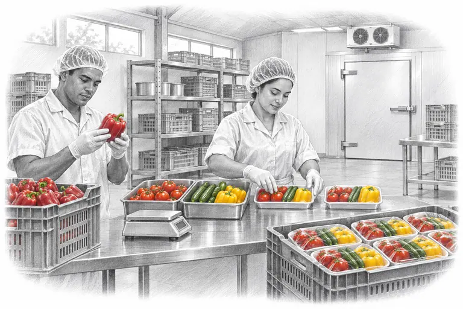
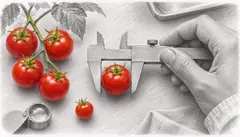
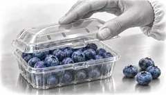
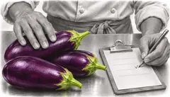

Calidad
Así seleccionamos y empacamos los vegetales antes de enviarlos al supermercado.


Selección
Elige la variedad y el punto de maduración que buscas.

Empaque
Consulta los formatos para tu góndola o tu cocina.

Entrega
Dinos dónde recibes tu pedido y acordamos los detalles de la entrega.